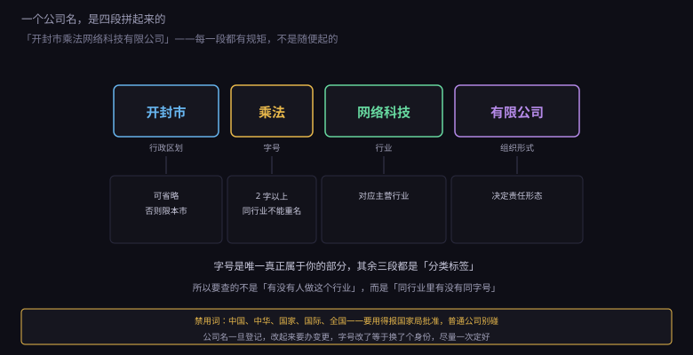
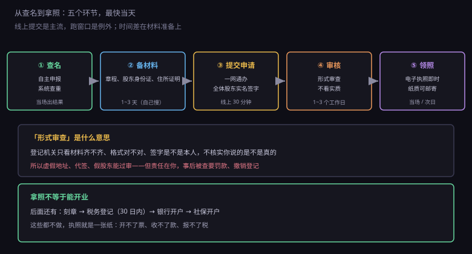
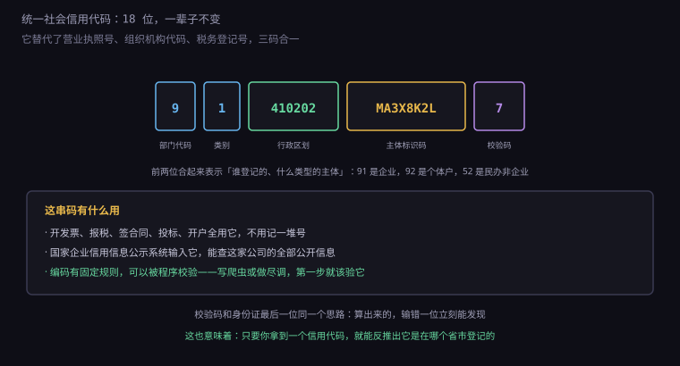

约 0.36 万字 · 3 张图 · 从想起个名，到拿到那张纸，中间只隔三步
起名不是发挥创意，是做填空题。

第一段，行政区划。 "开封市""河南省"，或者干脆不写。 这一段的含义是登记机关的管辖范围， 也影响你能不能跨区域经营。 冠省名的要在省级登记机关核，冠市名的在市级。
想不带行政区划（比如直接叫"乘法科技有限公司"）， 条件更严：注册资本一般要 5000 万以上， 由国家市场监督管理总局核准。初创公司基本不用考虑。
第二段，字号。 这是唯一属于你的部分，也是查重的主体。 要求两个字以上，不能是禁用词，不能跟同行业的现有企业近似。
第三段，行业。 要跟你的主营业务对应，用规范表述。 "网络科技""信息技术""文化传媒"都是常见选项。 这一段决定了别人一看名字大概知道你在做什么。
第四段，组织形式。 有限公司、股份有限公司、个人独资企业、合伙企业。 这一段不是装饰，它直接对应上一章讲的责任形态。 写成"有限公司"却实际是个体户，是登记错误。
很多人查名的方式是"搜一下有没有人叫这个名字"。不对。
真正的规则是：同一登记机关辖区内，同行业不得有相同或近似的字号。
拆开看三个限定条件：
同一辖区。 开封市叫"乘法科技"的，跟郑州市叫"乘法科技"的， 在市级登记的情况下不冲突（但如果在同一个省局登记，就冲突）。
同行业。 "乘法科技"和"乘法餐饮"可以做共存， 因为行业不同，不会让消费者混淆。 但如果两个都是科技类，即使一个做软件一个做硬件，也可能被判近似。
相同或近似。 这里是最玄的部分。"乘法"和"乘法算"算近似， "乘法"和"城发"读音近似，也可能被卡。 判断标准是有没有可能让公众混淆。
现在的做法是名称自主申报： 你在系统里自己查、自己比对、自己承诺不侵权， 系统给通过就通过了。这是"宽进"的思路—— 但责任在你，将来被在先权利人告了，你得改名赔偿。
所以查名时多做一步：顺便查一下商标。 在中国商标网搜一下你的字号，如果已经被别人注册在同类目上， 就算工商核名通过，将来也可能被要求停止使用。 这一块 8.6 会讲。
有限责任公司设立登记，需要的材料不多：
| 材料 | 要点 |
|---|---|
| 公司登记（备案）申请书 | 系统里填，法定代表人签字 |
| 公司章程 | 全体股东签署，写清出资、股权、议事规则 |
| 股东身份证明 | 自然人给身份证，公司给执照复印件 |
| 任职文件 | 董事、监事、经理的委派或聘任文件 |
| 住所使用证明 | 产权证复印件，或租赁合同加产权证明 |
| 名称自主申报承诺书 | 承诺不侵犯他人在先权利 |
看着简单，但每一份都有坑。
章程是最容易被忽视的一份。 很多人直接从网上下个模板，改个名字就交了。 但章程是公司的"宪法"，里面写了： 谁有多少股权、怎么分红、股东会怎么表决、 董事怎么产生、解散怎么清算。
模板的问题在于，它默认所有事都"按出资比例"。 但现实里往往不是这样：有人出钱多但不管事， 有人出钱少但全职干活，有人带资源进来。 这些安排必须在章程或股东协议里写清楚， 否则以后每一次决策都是吵架。
任职文件也有个常见错误： 法定代表人、执行董事、经理可以是同一个人， 但监事不能是法定代表人，也不能兼任董事和经理。 一个人开公司，通常是自己当执行董事兼经理， 再找个人（家人、朋友）挂监事。
注册地址是很多人第一次被卡住的地方。
规则的核心是：要有合法的场所使用证明。 自有房产给产权证，租的给租赁合同加房东的产权证复印件。 很多地方还要求房屋用途是"商用"或"商住两用"， 纯住宅不能注册（各地口径不同，越来越松，但没完全放开）。
没有商用地址怎么办？有几条路：
一是集群注册 / 托管地址。 很多园区、孵化器提供"一址多照"的托管服务， 一年一两千块，能收信、能配合检查。 这是目前最主流的做法，尤其对没有实体办公的软件公司。
二是住宅改商用。 部分城市允许，但要邻居同意（有些地方要居委会或业主委员会出证明）。 流程麻烦，而且会暴露家庭住址在公开信息里。
三是用亲属的商用房产。 要签租赁合同，最好象征性付点租金， 因为税务上"无租使用"会被核定租金征税。
这里有个必须提醒的点：注册地址是公开信息。 任何人查你的公司，都能看到这个地址。 所以别用自己家，也别用假的—— 市场监管会抽查，寄一封挂号信没人收，就可能被列入经营异常。
现在大部分地区都能网上办，流程压得很短。

时间上，材料齐全的话，一到三个工作日就能拿到执照， 有些地方当场办结。慢的从来不是审核， 是材料反复被打回——章程格式不对、签字不一致、 地址证明缺页，一次退回就是几天。
所以实操建议是：先找一份当地的成功样本对照着填， 或者花几百块让代理记账帮你报。 这笔钱买的不是"关系"，是"少跑三趟"。
拿到的是电子营业执照，跟纸质的有同等法律效力。 需要纸质的可以申请邮寄。现在很多场景（银行开户、税务） 直接扫电子执照的二维码就行。
前面反复出现一个词：形式审查。这是理解整套登记制度的关键。
形式审查是指：登记机关只检查材料是否齐全、 格式是否符合要求、签字是否齐全， 不核实材料内容是否真实。
所以你能看到这些现象： 地址是托管的、股东是代持的、章程是模板、 注册资本随便写——都能过。 因为登记机关没有义务去实地看、去查银行流水、去核对签字笔迹。
这套设计的逻辑是"宽进严管"： 进门容易，但进门之后要自己负责。 你提交虚假材料取得登记，事后被查出来， 市场监管可以撤销登记、罚款，甚至列入严重违法失信名单。
更重要的是民事后果：你对材料真实性负责。 如果因为虚假地址导致法院文书送达不到， 缺席判决的后果你自己承担； 如果股东是代持但没签协议，将来股权归属争议你举证不了。
所以"能过审"和"没问题"是两件事。 形式审查放你进来，实质风险还在你自己身上。
执照右上角有一串 18 位的代码，叫统一社会信用代码。 它是这家公司一辈子的身份证。

它替代了过去的三套号码：营业执照号、组织机构代码、税务登记号。 以前开个公司要记三个号，现在一个就够。
结构是这样的： 第 1 位是登记管理部门（9 是工商，1 是机构编制，5 是民政）， 第 2 位是机构类别（1 是企业，2 是个体户，3 是农民专业合作社）， 第 3 到 8 位是登记机关的行政区划码， 第 9 到 17 位是主体标识码（原来的组织机构代码）， 第 18 位是校验码。
所以看到"91"开头，就知道是企业；"92"开头是个体户； "52"开头是民办非企业单位。看到中间那 6 位， 能查出来是在哪个省市区登记的。
校验码用的是 GB 32100 规定的算法， 跟身份证最后一位、银行卡的 Luhn 是同一个思路： 用前 17 位算出一个值，输错任何一位都会对不上。
这对写程序的人有用：做企业信息查询、供应商审核、 甚至写爬虫入库，第一步就该校验这个码。 一个正则加一段加权求和，就能挡掉大部分脏数据。
按出现频率排：
一、名称近似。 最常被退的一条，而且系统提示往往很含糊（"与现有企业名称近似"）， 你得自己猜是哪个字撞了。解决办法是换字号，别在同一个词上死磕。
二、经营范围表述不规范。 自己写的句子（"做网站和 App"）一定被退， 必须用规范表述系统里的条目。
三、住所证明不完整。 只给了租赁合同没给产权证，或者产权证是复印的模糊件， 或者房屋用途写的是"住宅"。
四、签字不一致。 线上办要实名认证加电子签名， 但如果线下提交，章程上的签字和身份证上的名字写法不同（比如繁体简体）， 就会被退。
五、任职文件缺失。 忘了任命监事，或者监事同时被写成董事。 一人公司最容易犯这个错——因为找不到第二个人。
这五条都不难，但每一条都能让你多等三天。 所以注册这件事，快不快主要取决于你准备得细不细。